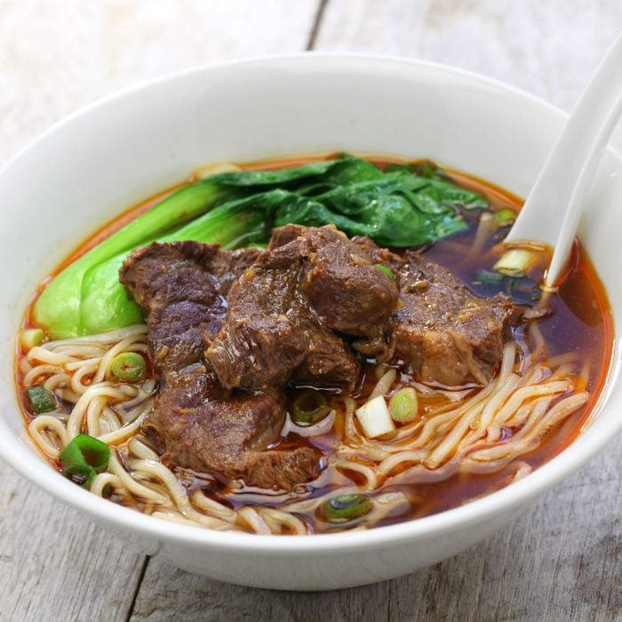

Chinese Beef Noodle Soup

Description
This fantastic soup containing udon noodle and beef chuck is simple to make yet flavorful and filling
Ingredients
- 2 pounds of beef chuck (cut into 2'' chunks)
- 1 pack of udon noodle (or noodle of your choice)
- 2 star anise pods
- 2 dried tangerine peel
- 5 bay leaves
- 1 whole head of garlic (peeled but kept whole)
- 5 slices of ginger
- 2 onions (cut into large wedges
- 5 romane tomatoes (cut into large wedges)
- leafy greens of your choice
- 10 cups of water
- 3 tablespoons of sesame seed oil
- 1/4 cup of shaoxing wine
- 1/4 cup soy sauce
- 15 grams of sugar
- 1 tablespoon cinnamon
Steps
- Start by cutting up the beef chuck and boiling for 5 minutes. carefuly remove the foamed residue on the top of the water
- in the meantime, chop up the onion and tomato into large wedges. Then cut the ginger, garlic, and greens
- Add the oil, star anise, dried tangerine peel, bay leaves, garlic, ginger, and onion into the pressure cooker
and set to broil while mixing the ingredients for a few minutes
- remove the beef form the boiling water (do not throw away the water) and add to the pressure cooker with the other ingredients.
Continue to mix pressure cooker ingredients together on broil for a few minutes.
- strain the water to remove impurities and add it to the pressure cooker.
- Finish up by adding the tomatoes, leafy greens, wine, soy sauce, sugar and cinammon and stir thoroughly
- Finally, close the lid and pressure cook for 1 hour. Once done, naturally release steam for 15 minutes and its ready!